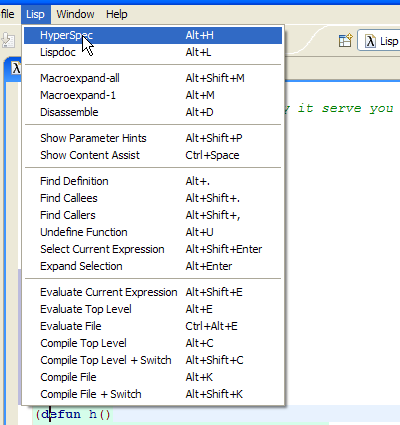
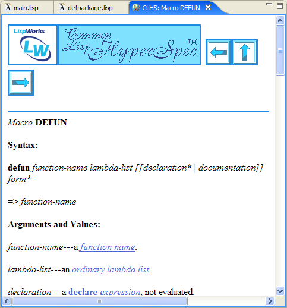
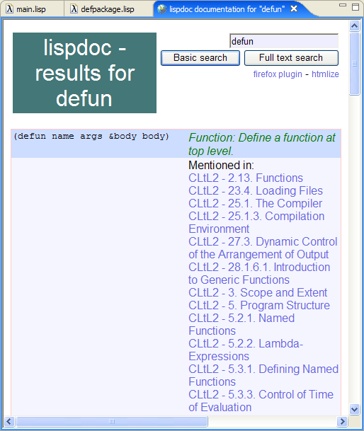
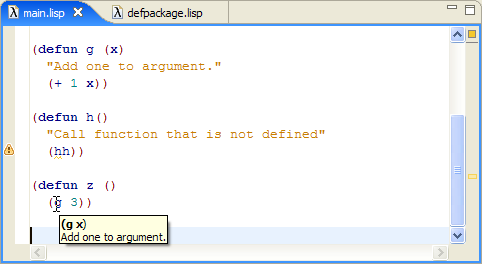
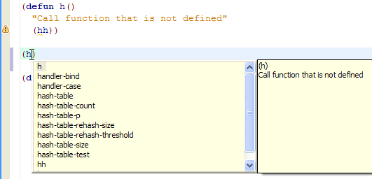
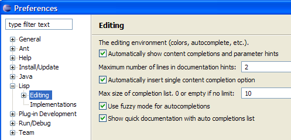
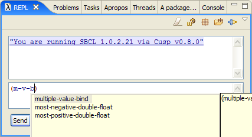
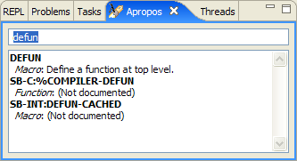

HyperSpec and LispDoc
HyperSpec
The main Lisp reference is HyperSpec. To find description of a symbol in HyperSpec put a cursor at the symbol and hit Alt+H (or select HyperSpec in Lisp menu):

This will open a browser window in Eclipse with page describing the symbol:

LispDoc
The other good source of documentation is LispDoc. On its website it is described as "a search engine for documentation of the Common Lisp programming language and many of its libraries". When you request LispDoc search on a symbol with Alt+L (or LispDoc from Lisp menu) you get a page in a browser with example code of this symbol and a bunch of links to Lisp documents, books or manuals that mention this symbol:

Quick Assistance
The environment supports automatic display of help information. It can sugest completions of symbols and show call signature and documentation string. The examples below show how this feature works ( Notice how functions defined in our code also display this information ):


Cusp also support fuzzy way for proposing autocompletion, but it has to be turned on in preferences. To do this, open Windows->Preferences... menu, and set corresponding options:

Then typing m-v-b will suggest multiple-value-bind:

Apropos
You can also search internal documentation using Apropos.

Back to table of contents